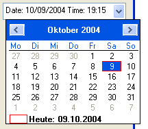

DateGadget()
Syntax
Result = DateGadget(#Gadget, x, y, Width, Height [, Mask$ [, Date [, Flags]]])Description
Creates a String gadget in the current GadgetList, in which a date and/or time can be entered.
Parameters
#Gadget A number to identify the new gadget. #PB_Any can be used to auto-generate this number. x, y, Width, Height The position and dimensions of the new gadget. Mask$ (optional) The format in which the date can be entered. See FormatDate() for the format of this mask. Important note: The gadget does not support the display of seconds, so if you specify "%ss" in the Mask$ parameter, it will simply be ignored! If you don't specify the mask or specify an empty string, a default mask will be chosen. The mask can be modified with the SetGadgetText() function. Date (optional) The initial date for the gadget. Not specifying this parameter or specifying a 0 value will display the current date. Flags (optional) Flags to modify the gadget behavior:
By default, the gadget has a button to display a calendar in which the user can choose a date (see image below). You can change this by specifying #PB_Date_UpDown in the Flags parameter. This will make the gadget display an up/down button that lets the user change the current selected part of the gadget. This option is only available on Windows.
If you specify #PB_Date_Checkbox in the Flags parameter, the Gadget will have a checkbox with which the user can set the Gadget to 'no date' (if the checkbox is unchecked). While the checkbox is unchecked, GetGadgetState() will return 0. To change the state of the checkbox, use SetGadgetState() with either 0 (=checkbox unchecked) or any valid date (=checkbox checked).
Return value
Returns nonzero on success and zero on failure. If #PB_Any was used as the #Gadget parameter then the return-value is the auto-generated gadget number on success.
Remarks
This gadget uses the same date format for its functions as used by the Date library. So you can use for example FormatDate() to display the results you get from GetGadgetState() in a proper format.
A 'mini help' can be added to this gadget using GadgetToolTip().
The following functions can be used for this gadget:
- SetGadgetState(): Set the currently displayed date.
- SetGadgetText(): Change the input mask of the gadget.
- GetGadgetState(): Get the currently displayed date.
- GetGadgetText(): Get the current displayed date as a string, as it is displayed in the gadget.
- GetGadgetAttribute(): With the following attributes:#PB_Date_Minimum: Get the minimum date that can be entered #PB_Date_Maximum: Get the maximum date that can be entered- SetGadgetAttribute(): With the following attributes:#PB_Date_Minimum: Set the minimum date that can be entered #PB_Date_Maximum: Set the maximum date that can be enteredThe following events are supported through EventType():#PB_EventType_Change: The date has been modified by the user.
This gadget supports the SetGadgetColor() and GetGadgetColor() functions with the following values as 'ColorType' to color the dropdown calendar (the edit area cannot be colored):#PB_Gadget_BackColor : backgroundcolor #PB_Gadget_FrontColor : textcolor for displayed days #PB_Gadget_TitleBackColor : backgroundcolor of the month title #PB_Gadget_TitleFrontColor: textcolor of the month title #PB_Gadget_GrayTextColor : textcolor for days not of the current month
Example
If OpenWindow(0, 0, 0, 200, 250, "DateGadget", #PB_Window_SystemMenu | #PB_Window_ScreenCentered) DateGadget(0, 10, 10, 180, 25, "Date: %mm/%dd/%yyyy Time: %hh:%ii") Repeat Until WaitWindowEvent() = #PB_Event_CloseWindow EndIf

See Also
GetGadgetState(), SetGadgetState(), GetGadgetText(), SetGadgetText(), GetGadgetAttribute(), SetGadgetAttribute(), GetGadgetColor(), SetGadgetColor(), CalendarGadget(), Date(), FormatDate()
Supported OS
All